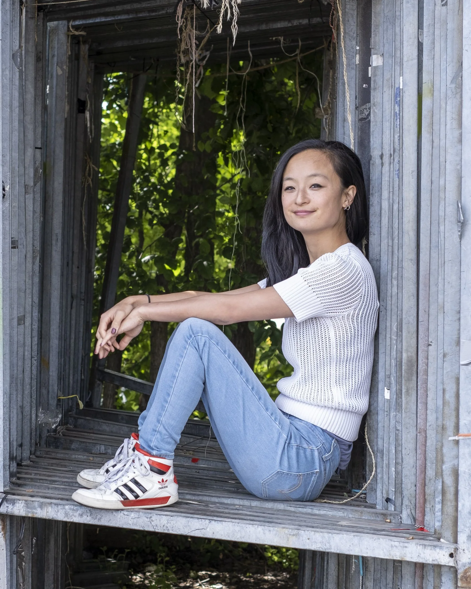

About Me
My name is Kwennie and I’m a visual storyteller from the Netherlands, working between illustration, journalism and data.
After graduating from AKV St. Joost in Breda, I began my career in editorial illustration. Working with newsrooms sparked a growing interest in the stories behind the images and I gradually moved from illustrating journalism to actively shaping it.
Around the same time I discovered data journalism, a field that immediately clicked with my long-standing love for maths. It offers a way to combine analysis, reporting and visual storytelling.
Today my work moves between data visualisation, illustration and journalistic storytelling. Sometimes the starting point is a dataset, sometimes a narrative.